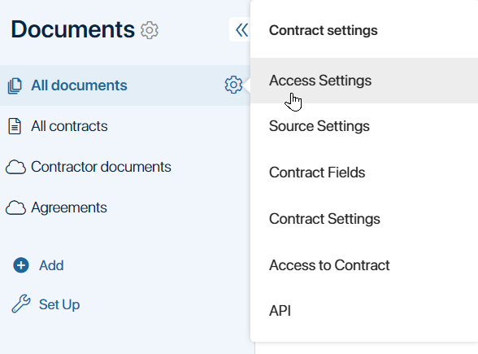
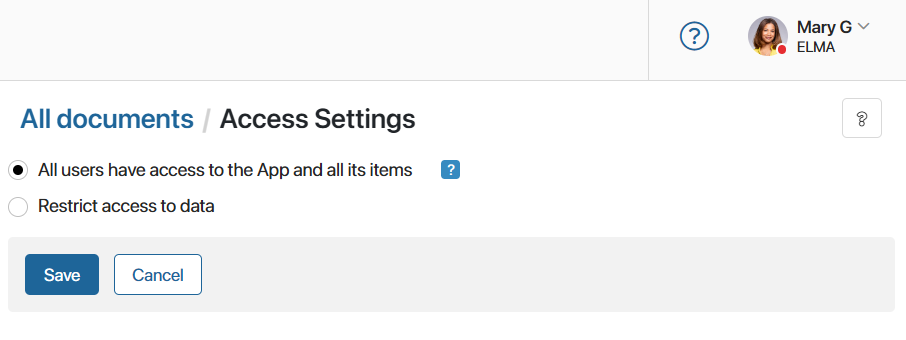
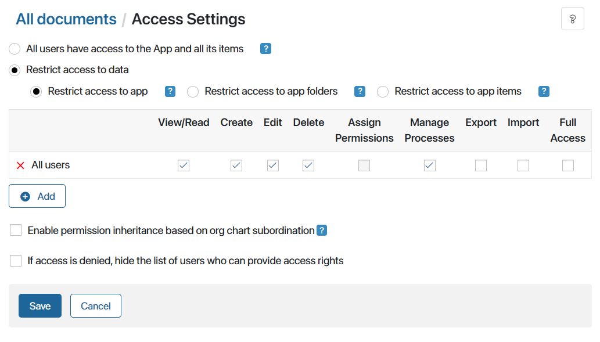
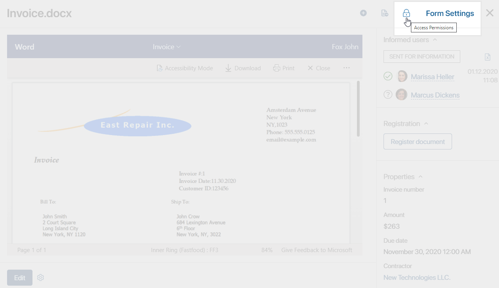
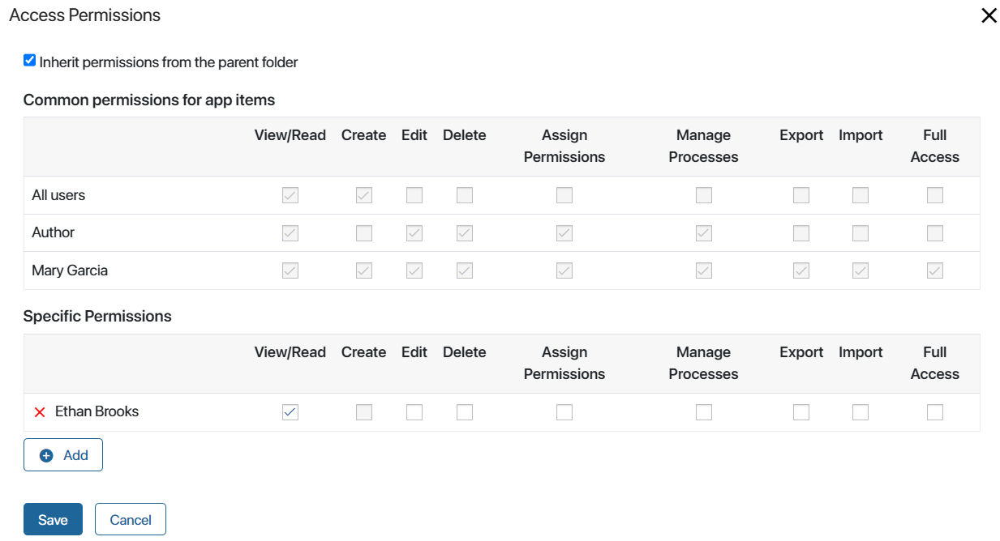
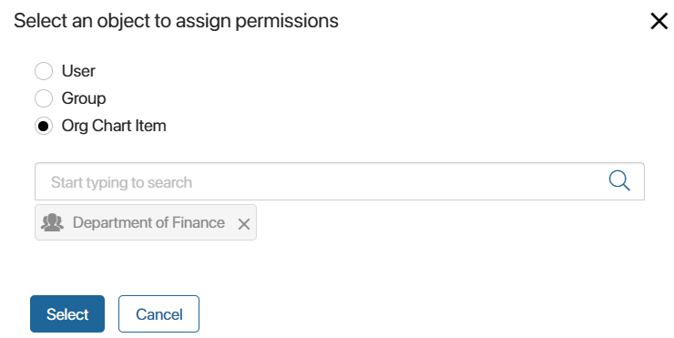

Every organization has a hierarchy of authority that describes what employees have to do and are allowed to do in their positions. Each employee has a specific role in the company and a corresponding level of access to information.
In BRIX you can specify who is allowed to view, edit, or delete files, folders, and documents, as well as change their access settings.
Access to documents
Depending on the position or role, employees may have different access rights to the same document. For example, employees can only view, edit, or delete invoices that they have added themselves. However, a CEO has full access to all invoices created by their subordinates.
Documents in BRIX are stored in apps of the Document type. You can configure access to the app as well as the workspace in which it is located. Employees without access to the app will only be able to open certain documents via direct links if they are granted the appropriate permissions. Read more in the Access permissions in BRIX article.
To manage access settings, open a document app and click the gear icon to the right of the app name. In the drop-down menu select Access Settings.

The settings page will open. The default option is All users have access to the App and all its items. This means that any user in the system can create, view, edit, and delete app items, as well as export data from the app or import data into it.

If you want to restrict access, select the Restrict access to data option. It allows you to specify employees and define what actions they can perform with documents.

There are three access restriction options:
- Restrict access to app. If you select this option, identical access permissions will be set for all documents in the app. For example, you can let all users view documents in the app, but only managers will be able to edit and create documents.
- Restrict access to app folders. This option allows you to set different access permissions for folders set up using the folder hierarchy option. To do that, you first need to configure the default access settings applied to all folders, then change permissions for each folder individually.
- Restrict access to app items. If you select this option, access can be configured individually for each document in the app. Same as Restrict access to app folders option, you firstly need to set up the default permissions for all documents and then manage access to each item on its view form.
If you restrict access to app folders or to app items, you can grant full access to documents exclusively to their authors. All other users can only create new documents within the app. To share a document, the user who created it will need to configure additional permissions for a user, group, or org chart item. Read more about granting and restricting individual rights in Access to app data.
Types of access permissions to documents
- View/Read. Users can view app items and download them to the PC.
- Create. Users can create new documents.
- Edit. Users can make changes to previously created documents, rename them, add file versions, and unarchive approval sheets.
- Delete. Users can delete documents.
- Assign Permissions. Users can grant permissions and limit access to the specific documents. This option is available only if the Restrict access to app is enabled.
- Manage Processes. Users can interrupt business processes, open task pages, and reassign them.
- Export. Users can export app items that they can view. This option is not available when you select Restrict access to app folders.
- Import. Users can import app data. This option is not available when you select Restrict access to app folders.
- Full Access. All the above-mentioned actions are allowed.
Individual access permissions to a document
If you have selected the Restrict access to app items option, you will be able to provide or restrict access to specific documents within the app. To do this, go to the app page and open the item. In the preview window, click the lock icon in the top right corner.

In the window that opens, you will see two sections: Common permissions for app items and Specific Permissions.

- Common permissions for app items.
Here you can see the access permissions as configured for all the documents in the app. The settings specified in this section cannot be canceled.
- Specific permissions.
Here you can assign access permissions to employees not included in the first section. Click +Add and select a user, user group, or org chart item in the provided window. In the opened window, select a user, an employee group, or an org chart item.

After you add an object, specify access rights for it, and click Save.
Access to files
In BRIX, you can limit the visibility of file storage to certain groups of employees and flexibly configure access to individual files and file folders. For example, a folder with product presentations can be accessible only to sales managers. Other employees will not see it in the folder list. By default, files within this folder inherit the permissions configured for it, but for certain presentations, you can restrict or grant access to certain employees.
You can configure access to files:
- Within the Files workspace.
- Within individual folders and files.
By default, all users have access to the Files workspace. The system administrator can limit its visibility. It will not be visible to users in the left menu, but they will be able to open files and folders via direct links if they are granted sufficient permissions. Restricting access to the workspace is useful when users who should not be working with the file storage, such as external auditors, are logged in. For more information about workspace access settings, see the Files workspace settings article.
Also, within the Files workspace, you can manage access to folders and individual files, that is, restrict or grant rights to certain users, groups, etc. Rights management is available to:
- The creator of a file or folder.
- Users with Assign permission access type.
- The user included in the Administrators group.
For more information about restricting access to individual objects in the workspace, refer to Access permissions to files and folders.
Found a typo? Select it and press Ctrl+Enter to send us feedback